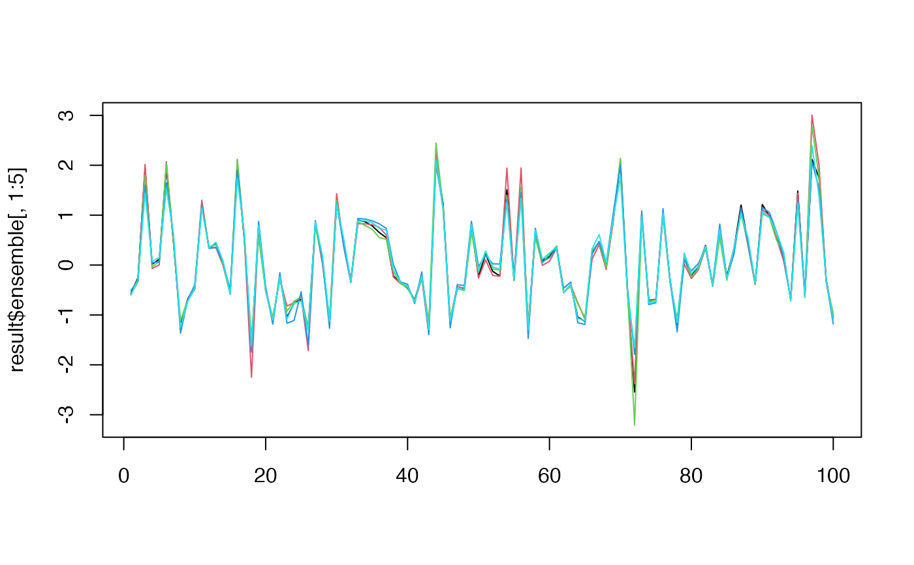

meboot.RdGenerates bootstrap replicates of a time series using the maximum entropy bootstrap algorithm with Rcpp implementation for improved performance. This method is particularly useful for non-stationary time series and preserves the dependence structure of the original data.
meboot(
x,
reps = 999,
trim = list(trim = 0.1, xmin = NULL, xmax = NULL),
reachbnd = TRUE,
expand.sd = TRUE,
force.clt = TRUE,
scl.adjustment = FALSE,
sym = FALSE,
colsubj,
coldata,
coltimes,
...
)A numeric vector or time series object to be bootstrapped.
Number of bootstrap replicates to generate (default: 999).
Controls tail behavior. Can be a single numeric value specifying the trim proportion (e.g., 0.10 for 10% trimming), or a list with components:
Trim proportion for tail calculation (default: 0.10)
Lower bound for generated values (optional)
Upper bound for generated values (optional)
Logical indicating whether to allow generated values to reach the boundaries xmin and xmax (default: TRUE).
Logical indicating whether to expand the standard deviation of the ensemble (default: TRUE).
Logical indicating whether to force the central limit theorem compliance by centering each replicate (default: TRUE).
Logical indicating whether to adjust the scale of the ensemble to match the original data's variance (default: FALSE).
Logical indicating whether to force symmetry in the maximum entropy density (default: FALSE).
Deprecated parameter from original meboot (included for compatibility).
Deprecated parameter from original meboot (included for compatibility).
Deprecated parameter from original meboot (included for compatibility).
Additional arguments passed to expansion functions.
A list with the following components:
Original time series data
Matrix of bootstrap replicates (n x reps)
Sorted original data
Intermediate points between sorted values
Absolute differences between consecutive observations
Trimmed mean of differences
Lower bound used for generation
Upper bound used for generation
Interval means satisfying mean-preserving constraint
Ordering index of original data
Scale adjustment factor (if scl.adjustment = TRUE)
The maximum entropy bootstrap algorithm generates replicates that:
Preserve the dependence structure of the original time series
Can handle non-stationary time series
Satisfy the ergodic theorem and central limit theorem
Maintain the mean and autocorrelation structure
The Rcpp implementation provides significant performance improvements over the original R implementation, especially for large datasets and many replications.
Vinod, H. D., & Lopez-de-Lacalle, J. (2009). Maximum entropy bootstrap for time series: The meboot R package. Journal of Statistical Software, 29(5), 1-19.
# \donttest{
# Basic usage with a time series
set.seed(123)
x <- ts(rnorm(100), start = c(2000, 1), frequency = 12)
result <- meboot(x, reps = 1000)
# Plot first few replicates
matplot(result$ensemble[, 1:5], type = "l", lty = 1)
lines(result$x, col = "black", lwd = 2)

# With custom bounds
result_bounded <- meboot(x, reps = 100,
trim = list(trim = 0.1, xmin = -3, xmax = 3))
#> Warning: expand.sd and force.clt were set to FALSE to enforce limits xmin/xmax.
# With scale adjustment
result_scaled <- meboot(x, reps = 100, scl.adjustment = TRUE)
# }